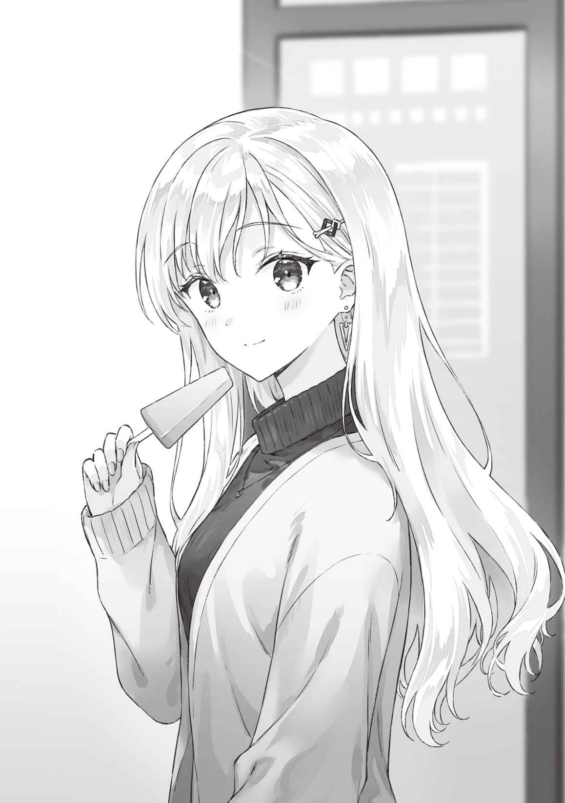

●10月31日（日曜日）
起きるときにいま「目覚めつつある」と自覚できるときがある。
たぶん、体のほうが先に起きてしまって、脳が追いついていないんだろう。
濁った意識でも外界からのぼんやりした情報くらいは処理することができて、つまるところそれはカーテンの隙間から差し込んでくる細い光だったり、戸の向こうの廊下から聞こえてくる仲居さんたちのぱたぱた歩き回る音だったり、近くから聞こえてくる水の音だったりするのだ──水の音？
「あれ？」
思わず声が出た。
目を開ける。辺りを見回した。自分の布団のなかにも隣の布団にも綾瀬さんの姿がなくて、ほど近くから何かひとが動きまわるような音が聞こえたような。
「綾瀬……じゃなくて、
すこし強い声で呼んでみる。
思いもかけないほうから声がした。
「起きたー？」
声の方向に違和感を覚えて体を起こした。
からりと
えっ、まさか。
「朝のお風呂。いただいちゃった」
「内湯に入ってた？」
こくりとうなずかれた。
「だって、せっかくあるのに入らないの、もったいなくない？ どんな感じなのか、興味あったんだ。いいお風呂だったよ」
まさか内湯を使うとは思わなかった。それはまあ小さな廊下を隔てた仕切りの向こうにあるから最低限のプライバシーは保てるけれど。これが話に聞くカップル専用や新婚用の部屋だったらガラス戸の向こうに風呂が見えているタイプの内湯だったかもしれない。
いずれにしても湯上がり綾瀬さんは朝から刺激が強すぎた。
胸元で合わせた浴衣の襟元や濡れて
ほんと、心臓に悪い。
洗面所で身支度を整え、部屋に戻る。
風呂場の脱衣所から出てきた綾瀬さんが、なぜかドライヤー片手に入ってくる。まだ浴衣のままだった。そのまま向かい合わせの椅子が置かれた窓際まで歩いていくと、ドライヤーのコードを伸ばして窓際の壁にあったソケットに
椅子に深めに腰かけた綾瀬さんが頭に巻いていたタオルを取ると、金色の長い髪がくるくるとほどけて背もたれの後ろへと落ちた。
「ちょっとうるさくなるけど、いい？」
「気にならないよ。だいじょうぶ」
綾瀬さんがドライヤーのスイッチをかちりと入れる。ブォンという温かい風の出る音が静かな部屋の中を満たした。
風を手首のあたりにあてている。なるほど、髪を傷めないよう、ああして温度を確かめているわけか。それから髪の根元のあたりへと吹き出し口を近づける。ドライヤーを持つ手と反対側の手を髪の中へと差しいれた。それから、
ドライヤーの吹き出し口を移動させつつ、反対側の手で髪を
綾瀬さんは目を閉じながらドライヤーで髪を乾かしつつぽつりと何かをつぶやいた。
けれど、吹き出す風の音がうるさくて聞こえない。
「なにか言った？」
俺の声に
動きを止めたドライヤーの柄をなんとなく両手で持ちながら綾瀬さんが俺のほうを見ている。
何か言おうとしてためらっているのだ。
俺は彼女のほうへと近づくと、「してほしいこととかある？」と
首を横に振って否定する。
なんだろう。
何度か足下に視線を落とし、それから俺のほうを見て、という動作を繰り返した。
小さく息を吐いてから言う。
「私……やっぱり父に会ってくる」
父、と言った。
これまで
父と、面会する。そう綾瀬さんは宣言したのだ。
そう、宣言。もう決めていて、それを俺に告げた感じ。
でも──。
「もう月末だけど、だいじょうぶなの？」
伊東
「お母さんに連絡した」
そうか。
「──私も今日までだと思ってたから。そうしたらすぐに連絡を取ってくれて、明日の朝だったら
「明日の……朝」
「学校に行く前に、たぶん30分くらいだと思うけど……」
「そうなんだ。……ちょっと心配だけど。平気？」
こくりとうなずいた。
「
「俺が？」
「面会のたびに
今度は俺がうなずいた。
「父は何にも変わってなくて、お母さんを悲しませたときのままで。そういう父の態度が許せなくて突っかかって……」
ぎゅっと両手でドライヤーの柄を握りしめている。熱を失った小さなドライヤーが彼女の両手の中でかすかに震えている。
「でも、さ。私、文句を言う前に言いたいことがあったんだ。昨日の夜、それを思い出した。
「俺の……？」
「うん。ねえ、浅村くん……」
ドライヤーの震えが止まる。落としていた視線が上を向いて俺を見つめてきた。まっすぐな瞳の中に俺の顔が映っている。
「私、ほんとうに浅村くんの言うように父とはちがう人間かな？」
俺は反射的にうなずこうとして思いとどまった。
ここは安請け合いをするところじゃない。
「それを、確かめに行くつもりなんだよね」
そのはっとなった表情に俺は胸を突かれた。
厳しすぎる言い方だったろうか。話に聞く限りでは綾瀬さんは
綾瀬さんの感情をフォローするだけなら、ここでは安易にだいじょうぶだよって言えばいいのかもしれない。でもそれは俺たちにはできないのだった。それを、俺も綾瀬さんも知っている。
ただ、だからといってここで突き放したいわけじゃない。
「いっしょに行くよ」
「えっ……」
「登校前だったら俺も同行できる」
「……でも、そんなの。
「伊東さんにフェアじゃないって思うなら、離れた席で見守るだけ、とか。どうかな？」
綾瀬さんが俺の提案に瞳を揺らす。
あちらこちらに視線が散ってから俺のほうへと戻ってきた。
「それなら……。お願いしても、いい？」
俺はうなずいた。
「もちろん。
言いながら、俺は綾瀬さんに近寄ると手の中で沈黙していたドライヤーを取り上げた。
「……え？」
「やってもいいかな。まあ、俺で良ければだけど。他人に髪をいじられるのが嫌っていう人もいるし。無理にとは言わない」
「嫌、じゃない。
その「悠太くん」が昨日のなごりの「悠太くん」なのか、それともそれ以外の──悠太兄さんでも
スイッチを入れて風の温度を手にあてて測る。吹き出し口との距離を確かめて、これはさすがに熱すぎるだろうという距離を覚える。それより離して髪にあてればだいじょうぶだろう。
自分の髪にドライヤーをあてるときは何も気にならないけれど、他人の、それもきっと大切に日々手入れしているであろう長くてきれいな髪にドライヤーをあてるのは緊張する。熱で髪を傷めるのを嫌うだろうし。
すこしでもヒントを得たくて、俺は、お店の人に散髪とシャンプーをしてもらったあとってどんなふうにドライヤーされたっけ、などと考えていた。
「じゃ、あてるよ」
「うん。お願い。あと……ありがとう」
素直な感謝に俺は笑みを返しつつ念のために尋ねた。
「乾かし方のコツとかある？」
「あっと……。あのね、初めはタオルで水分を取るんだけど、そっちは自分でやったからいい。いちばん湿ってるのが髪の根元だから、そこからお願い」
「根元って……頭のてっぺんのほうか。じゃ、お客様、いきますよ」
「お願いします」
冗談めかして言った言葉に
彼女は目を閉じて背もたれに体を預ける。
綾瀬さんがやっていたように俺はドライヤーの風をあてながら、ゆっくりともう一方の手で髪をくしけずる。
綾瀬さんの口から吐息が漏れた。
「気持ちいい？」
「うん。他人に髪を
わかる気がする。
「上のほうから毛先のほうへと乾かしていくのが基本だから。あと、ひととおり終わったら最後に冷風で冷ます感じで」
「了解」
頭の上から徐々に温風の吹き出し口を髪の下のほうへと向かって移動させていく。
さらさらできれいな髪を傷めないように慎重に。やさしく、ゆっくりと。
手で
「下手でごめん」
「
目を閉じて力の抜けきったような表情で言われると、まあこういうのもたまにはいいかと思えるのだった。
「今度、私もやってあげるね」
「
「そっか」
残念そうに言ってから、「伸ばしてみる？」とからかうような声で言われてしまった。
伸ばすって……ロングに？ 俺は自分が綾瀬さんくらいの長さの髪になった場合を頭の中で想像してみた。ものすごく似合わない気がする。
「俺はこの髪型でいいかなぁ」
「そう？ 私は長髪の
絶対
「遠慮しておく」
「惜しいなぁ」
「……髪、伸びたね」
「……うん」
朝の光が窓際の大きなガラスいっぱいから差し込んでくる。
「寝ちゃいそう」
「もう終わるよ」
かちりとスイッチを切ると、俺は最後に綾瀬さんの頭を軽く
「はい。終わったよ」
「ありがとう」
ぱちりと開けた彼女の瞳は明るい朝の陽射しを返して輝いていた。
朝食後にすこしだけ勉強を進めると、俺たちはチェックアウトする。
来た道を戻ってバス停まで
「お土産はどうする？」
「気を使わなくていいよとは言われてるけど、何かちょっとしたものが欲しいよね」
「駅でお菓子とか？」
「いいね。そうしよう」
バス停の待ち列に並ぼうとして綾瀬さんが不意に言い出した。
「そうだ、忘れ物」
「え？ 旅館に？」
「ううん、そうじゃなくて。うん。急げば間に合う。ほら」
言いながらさっさと歩きだした先にあったのは、昨日も寄ったコンビニだった。昼食の
「忘れ物って……」
「
「あー」
忘れてた。なにしろあれは言い訳ででっちあげただけだ。それにチェーンのコンビニにそんなに都合よくご当地名産のアイスなんて売ってるんだろうか。
「ないね……」
残念そうだ。
ぼんやりとアイスボックスを眺めていた俺の視線がふと止まる。
「これもいちおうご当地アイスだけど……」
「えっ、どれ」
俺はそれを指さした。
「『
「でも他になさそうだし」
アイスボックスの中には定番のガリガリかじったり爽やかに
時計をちらりと見た綾瀬さんが焦った顔になる。
「ああもうバスが来ちゃう。これでいい！」
北海道の味のアイスを手に取った。
「……秋だよ？」
「秋でも！」
「ここ熱海」
「いいの。食べる」
まあ、いいけど。
俺たちはご当地ものを諦めて目に付いたアイスをそれぞれ購入した。バスが来るまでに食べてしまえと慌ててかじったものだから、頭の奥が痛くなったけれど、それも旅の思い出としてはありなんじゃないかなと思えた。
おいしそうに笑顔で
思い返してみれば昨年の夏に出会った頃はこんなふうに肩の力を抜いた笑顔を見た覚えがないよなぁと俺は感慨に
写真で見た
「次はほんとうの旅行で来たいね」
綾瀬さんの言葉に俺は深くうなずいた。
そのためには片付けるべき課題をクリアしないとな。とりあえずは帰ってからも勉強のつづきをしないといけないし、そしてそのあとは──。
綾瀬さんには
